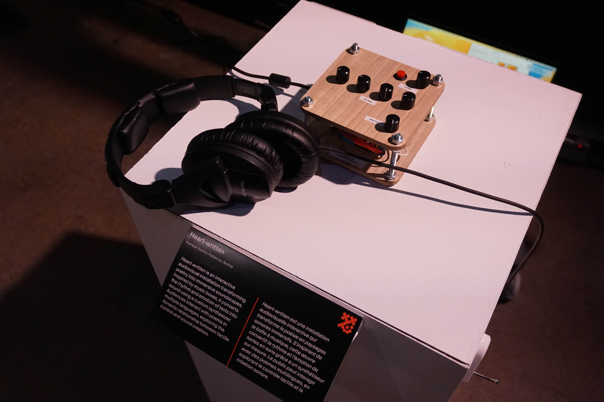
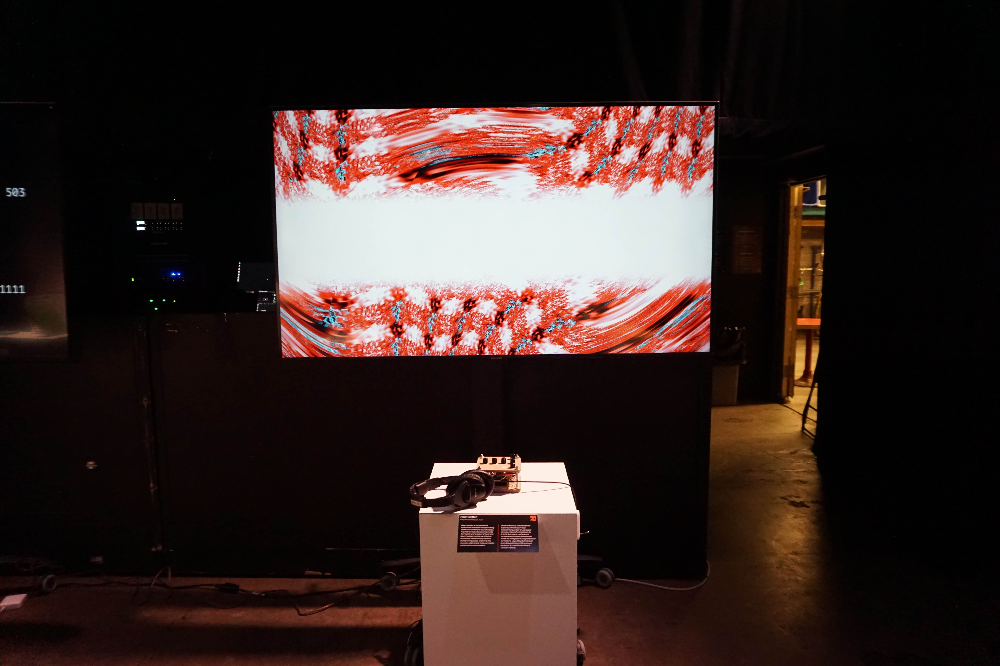

HEART-WRITTEN (2024)
Heart-Written (w/ Kamyar Karimi) is an interactive audio-visual experience that explores writing and poetry of Iranian writer Hengameh Akbarnezhad. Her writings deal with nostalgia for what could be once, or unrealized love that failed to exist. In most of her writings, themes of homesickness, longing, and an introspective emotional analysis of her idea of love are present. This interactive work allows the audience to engage with her writings and play with the imagined synthesizer that gives them a sonic life. All of the poems are written in Farsi and a visualizer has been developed accompanied with English translations to allow the English-speaking audience to also understand the texts. I contributed to Heart-Written by building the controller that manipulates the video (TouchDesigner) on the screen and the sound (Max/MSP) coming from the headphones. It is built with potentiometers, a push button, an ESP32 microcontroller, sandwiched between two pieces of wood. This project was exhibited at the 2025 Design and Computation Arts end-of-year exhibition Nodes.Noeuds, held at Société des arts technologiques, and at the 2025 Nostagain Symposium Love & Loss, held in Concordia University’s 4th Space.

